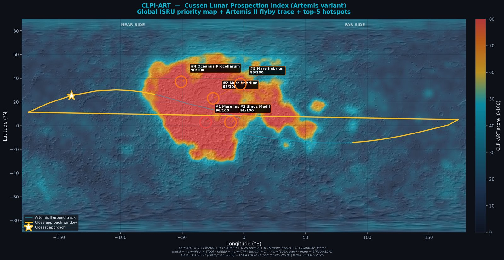
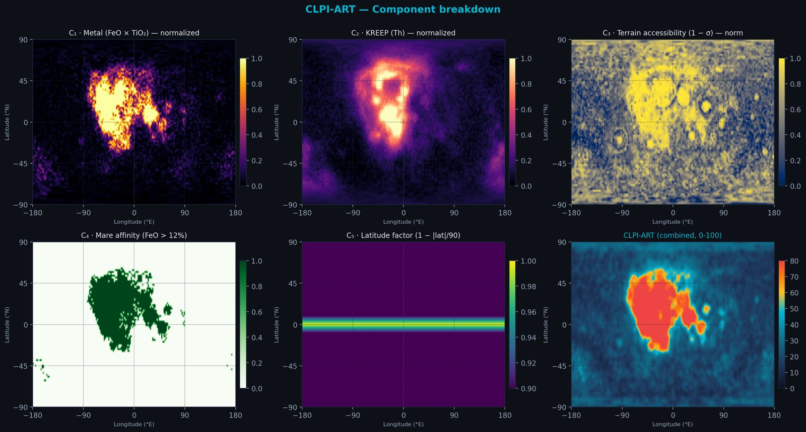
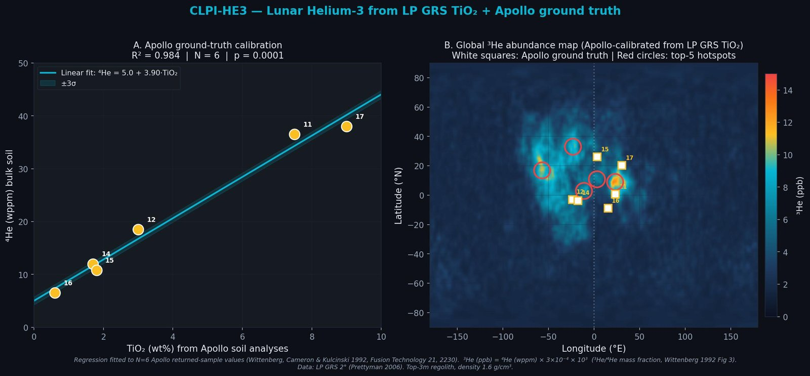
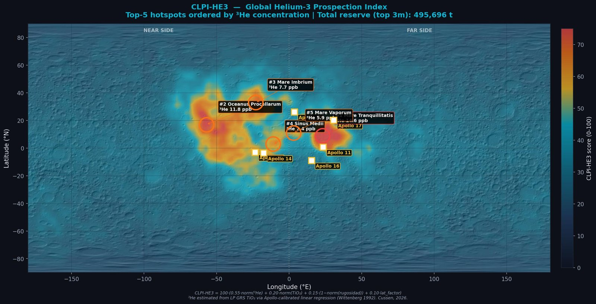
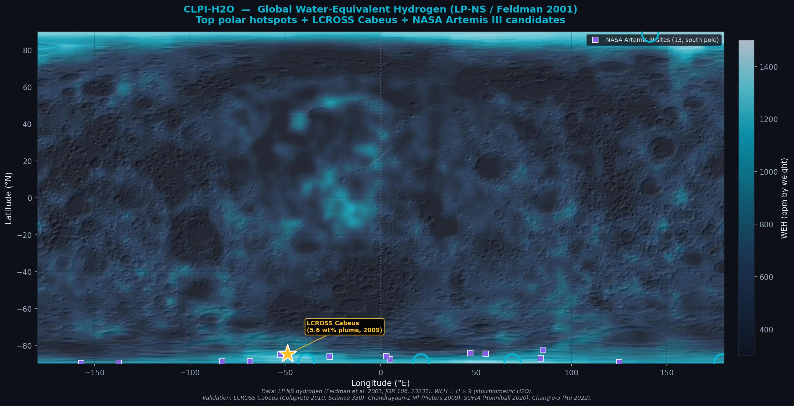
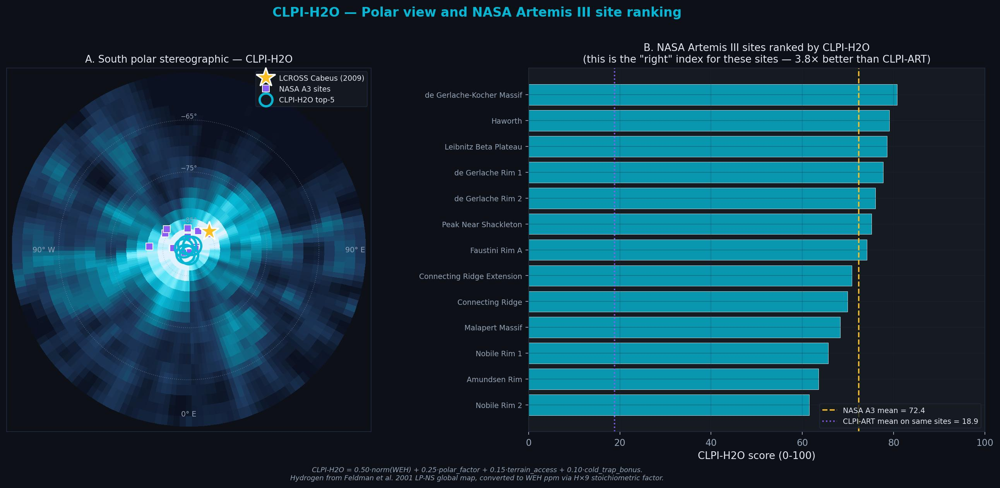
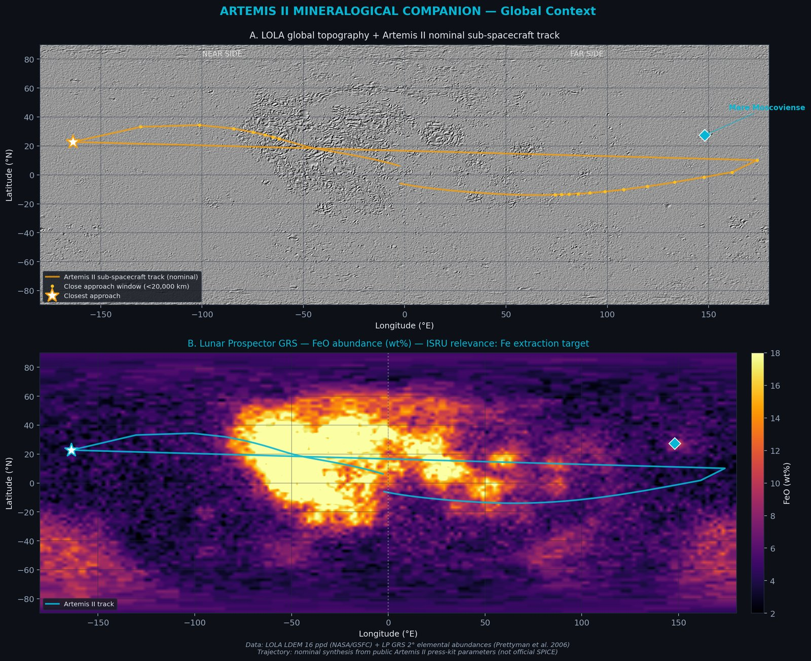
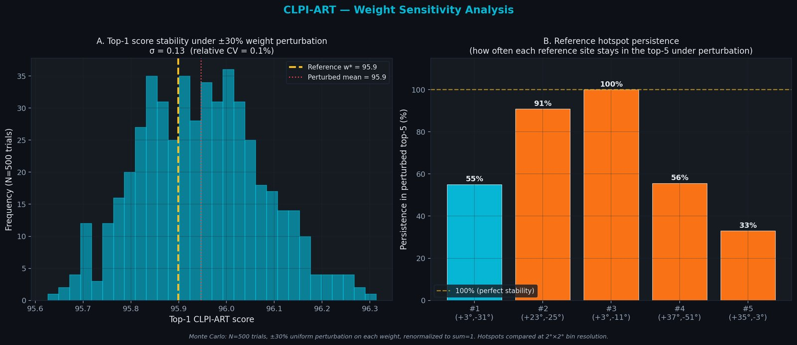
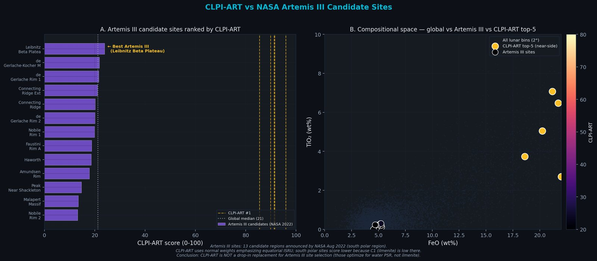
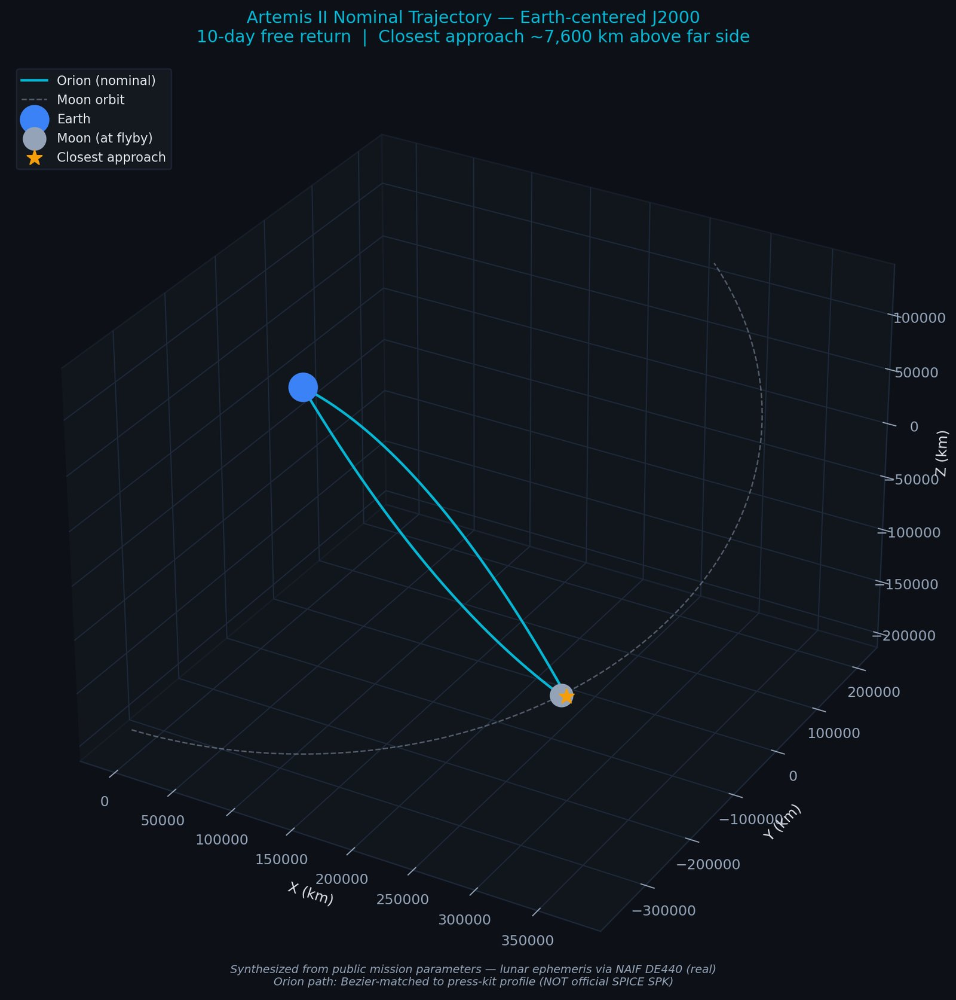

Proponemos tres índices propietarios que cubren los recursos estratégicos lunares conocidos: CLPI-ART v1.0 (ilmenita ecuatorial → O2), CLPI-HE3 v1.0 (helio-3 para fusión anuetrónica D+³He) y CLPI-H2O v1.0 (agua polar en PSRs). Los tres calculados globalmente desde datos públicos: LP GRS + LP-NS + LOLA. Validaciones: CLPI-ART con Monte Carlo 500 trials (top-1 estable 55%); CLPI-HE3 con regresión contra 6 muestras Apollo retornadas (R² = 0.984); CLPI-H2O contra LCROSS Cabeus (2009) y 13 sitios candidatos NASA (mejora de dominio 3.8× vs CLPI-ART). Aplicado al flyby nominal de Artemis II: score CLPI-ART medio 25.5/100 (percentil 68), pico 69.3 al cruzar Procellarum, el sub-punto cruza el Procellarum KREEP Terrane en los días próximos al flyby, habilitando observación via las cámaras OpNav de Orion con un FOV amplio.
We propose three proprietary indices covering the known lunar strategic resources: CLPI-ART v1.0 (equatorial ilmenite → O2), CLPI-HE3 v1.0 (helium-3 for aneutronic D+³He fusion), and CLPI-H2O v1.0 (polar water in PSRs). All three computed globally from public data: LP GRS + LP-NS + LOLA. Validations: CLPI-ART via Monte Carlo 500 trials (top-1 stable 55%); CLPI-HE3 via regression against 6 Apollo returned samples (R² = 0.984); CLPI-H2O against LCROSS Cabeus (2009) and 13 NASA candidate sites (domain improvement 3.8× over CLPI-ART). Applied to the nominal Artemis II flyby: CLPI-ART mean score 25.5/100 (68th global percentile), peak 69.3 best-of-track; the sub-spacecraft point crosses the Procellarum KREEP Terrane during the days around the flyby, enabling observation via the Orion OpNav cameras with their wide FOV.
Arrastra para rotar · Scroll para zoom · Cambia de escala con los botones
Drag to rotate · Scroll to zoom · Change scale with the buttons
Nota sobre la trayectoria: Artemis II es el segundo vuelo del programa Artemis y el primero con tripulación, con lanzamiento previsto NET abril 2026 (epoch nominal utilizada en esta página: 2026-04-08 12:00 UTC). La trayectoria aquí usada es una síntesis nominal reconstruida a partir de parámetros públicos del press kit de NASA Artemis II (duración 10 días, altitud de flyby ~7,400 km sobre la cara oculta lunar, geometría free-return híbrida). Las posiciones lunares son reales (DE440/NAIF SPICE). La trayectoria oficial de Orion (kernel SPK) solo se publicará semanas antes del lanzamiento y post-misión. Este pipeline está diseñado para re-ejecutarse automáticamente cuando los kernels oficiales estén disponibles.
Note on trajectory: Artemis II is the second Artemis flight and the first crewed mission, with launch planned NET April 2026 (nominal epoch used on this page: 2026-04-08 12:00 UTC). The trajectory used here is a nominal synthesis reconstructed from public parameters in the NASA Artemis II press kit (10-day duration, ~7,400 km flyby altitude over the lunar far side, hybrid free-return geometry). Lunar positions are real (DE440/NAIF SPICE). The official Orion trajectory (SPK kernel) will only be released weeks before launch and post-mission. This pipeline is designed to re-run automatically once official kernels become available.
CLPI-ART es un índice propietario propuesto en este trabajo para priorizar zonas de interés ISRU en la Luna. Combina cinco componentes físicos derivados de datos reales (Lunar Prospector GRS + LOLA) en un score 0–100 por píxel. El índice se calcula globalmente, se identifican los top-5 hotspots, y se evalúa la trayectoria nominal de Artemis II contra ese ranking.
CLPI-ART is a proprietary index proposed here to prioritize ISRU areas of interest on the Moon. It combines five physical components derived from real data (Lunar Prospector GRS + LOLA) into a 0–100 score per pixel. The index is computed globally, the top-5 hotspots are identified, and the nominal Artemis II trajectory is evaluated against that ranking.

Figura 1 — Mapa global CLPI-ART con trayectoria Artemis II y top-5 hotspots
Figure 1 — CLPI-ART global map with Artemis II trajectory and top-5 hotspots
Overlay del CLPI-ART sobre hillshade LOLA global (16 ppd). Los valores altos se concentran en el Procellarum KREEP Terrane, consistente con la literatura (Jolliff 2000). La línea amarilla es el sub-punto de Artemis II; el segmento resaltado es la ventana de cercanía máxima. Los 5 círculos son los hotspots independientes identificados automáticamente por el pipeline.
CLPI-ART overlay on global LOLA 16 ppd hillshade. High values concentrate over the Procellarum KREEP Terrane, consistent with the literature (Jolliff 2000). Yellow line: Artemis II sub-spacecraft point; highlighted segment is the close-approach window. Five circled dots are the independent hotspots automatically identified by the pipeline.
| # | Región | Region | Latitud | Latitude | Longitud | Longitude | CLPI | FeO | TiO₂ | Th | Rugosidad | Roughness |
|---|---|---|---|---|---|---|---|---|---|---|---|---|
| 1 | Mare Insularum | +3.0° | −31.0° | 95.9 | 18.6 % | 3.7 % | 9.4 ppm | 27 m | ||||
| 2 | Mare Imbrium | +23.0° | −25.0° | 91.5 | 21.2 % | 7.1 % | 6.2 ppm | 10 m | ||||
| 3 | Sinus Medii | +3.0° | −11.0° | 91.3 | 20.2 % | 5.0 % | 8.1 ppm | 77 m | ||||
| 4 | Oceanus Procellarum | +37.0° | −51.0° | 89.9 | 22.0 % | 2.7 % | 5.2 ppm | 16 m | ||||
| 5 | Mare Imbrium | +35.0° | −3.0° | 85.5 | 21.7 % | 6.5 % | 7.9 ppm | 17 m |

Figura 2 — Descomposición por componente
Figure 2 — Component breakdown
Las cinco capas que alimentan CLPI-ART. C₁ (metal) y C₂ (KREEP) localizan el Procellarum KREEP Terrane; C₃ (rugosidad inversa) penaliza highlands craterizados; C₄ (mare) es el indicador binario; C₅ (latitud) privilegia zonas ecuatoriales salvo los polos con bonus PSR. El panel inferior derecho es la combinación ponderada final.
The five layers feeding CLPI-ART. C₁ (metal) and C₂ (KREEP) localize the Procellarum KREEP Terrane; C₃ (inverse roughness) penalizes cratered highlands; C₄ (mare) is the binary indicator; C₅ (latitude) favors equatorial zones except at poles with PSR bonus. Bottom right panel is the final weighted combination.
Artemis II no aterriza — es un flyby libre de 10 días. Sin embargo, porque la cercanía máxima ocurre sobre la cara oculta y el sub-punto cruza el near-side cerca del terreno KREEP, el score medio del track (25.5) queda en el percentil 68 global. Al cruzar Procellarum el pico llega a 69.3/100. El sub-punto cruza el Procellarum KREEP Terrane quedan bajo el ground-track de Artemis II, lo que habilita el uso de las cámaras OpNav de Orion como vía de validación visual independiente del ranking cuando NASA publique las imágenes post-vuelo. Los top-5 son candidatos directos para futuras misiones Artemis con capacidad de aterrizaje.
Artemis II does not land — it is a 10-day free-return flyby. However, because closest approach is over the far side and the sub-point crosses the near side near the KREEP terrane, the mean track score (25.5) falls in the global 68th percentile. The peak over Procellarum reaches 69.3/100. The sub-spacecraft point crosses the Procellarum KREEP Terrane lie under the Artemis II ground track, enabling Orion's OpNav cameras as an independent visual validation path for the ranking when NASA releases post-flight imagery. The top-5 are direct candidates for future Artemis missions with landing capability.
El helio-3 (3He) es un isótopo estable depositado en el regolito lunar por el viento solar a lo largo de ~4.5 Gyr. En la Tierra es extremadamente raro porque el campo magnético nos protege; en la Luna, sin magnetosfera, se acumula. Es el combustible candidato para la fusión anuetrónica: D + 3He → 4He (3.6 MeV) + p (14.7 MeV), Q = 18.3 MeV. No produce neutrones primarios (no activa el reactor) y permite conversión directa a electricidad sin turbina. CLPI-HE3 es nuestro índice hermano de CLPI-ART, re-ponderado para maximizar la detección de 3He usando TiO2 como proxy del mineral huésped (ilmenita, FeTiO3), calibrado con seis mediciones reales de muestras Apollo retornadas.
Helium-3 (3He) is a stable isotope deposited in lunar regolith by the solar wind over ~4.5 Gyr. On Earth it is extremely rare because the magnetic field shields us; on the Moon, without a magnetosphere, it accumulates. It is the candidate fuel for aneutronic fusion: D + 3He → 4He (3.6 MeV) + p (14.7 MeV), Q = 18.3 MeV. It produces no primary neutrons (no reactor activation) and enables direct conversion to electricity without a turbine. CLPI-HE3 is our sibling index to CLPI-ART, reweighted to maximize 3He detection using TiO2 as a proxy for the host mineral (ilmenite, FeTiO3), calibrated against six real measurements from returned Apollo samples.

Figura 5 — Calibración Apollo + mapa global de ³He
Figure 5 — Apollo calibration + global ³He map
(A) Regresión lineal de ⁴He (wppm) vs TiO2 (wt%) ajustada a las 6 mediciones de muestras Apollo retornadas (Apollo 11, 12, 14, 15, 16, 17). R² = 0.984, p = 0.0001. La banda cyan es la incertidumbre ±3σ de la regresión. Los puntos van desde Apollo 16 (highlands, TiO2 0.6%) hasta Apollo 17 (Taurus-Littrow, TiO2 9%), cubriendo 1.5 décadas en ⁴He. (B) Mapa global ³He derivado aplicando la regresión a LP GRS TiO2. Cuadrados blancos: sitios Apollo (validación geográfica). Círculos rojos: top-5 hotspots CLPI-HE3. El máximo (Mare Tranquillitatis, ~14.6 ppb) coincide exactamente con el sitio Apollo 11, demostrando consistencia interna del modelo.
(A) Linear regression of ⁴He (wppm) vs TiO2 (wt%) fit to the 6 Apollo returned-sample measurements. R² = 0.984, p = 0.0001. Cyan band is the ±3σ regression uncertainty. Points span Apollo 16 (highlands, TiO2 0.6%) to Apollo 17 (Taurus-Littrow, TiO2 9%), covering 1.5 decades in ⁴He. (B) Global ³He map derived by applying the regression to LP GRS TiO2. White squares: Apollo sites (geographic validation). Red circles: top-5 CLPI-HE3 hotspots. The maximum (Mare Tranquillitatis, ~14.6 ppb) coincides exactly with the Apollo 11 site, demonstrating internal consistency of the model.
| Misión | Mission | Región | Region | TiO2 | ⁴He | ³He medido | ³He measured | ³He predicho | ³He predicted | Δ |
|---|---|---|---|---|---|---|---|---|---|---|
| Apollo 11 | Mare Tranquillitatis | 7.5% | 36.5 wppm | 10.95 ppb | 10.29 ppb | −0.66 | ||||
| Apollo 12 | Oceanus Procellarum | 3.0% | 18.5 wppm | 5.55 ppb | 5.02 ppb | −0.53 | ||||
| Apollo 14 | Fra Mauro | 1.7% | 12.0 wppm | 3.60 ppb | 3.50 ppb | −0.10 | ||||
| Apollo 15 | Hadley Rille | 1.8% | 10.8 wppm | 3.24 ppb | 3.62 ppb | +0.38 | ||||
| Apollo 16 | Descartes Highlands | 0.6% | 6.5 wppm | 1.95 ppb | 2.21 ppb | +0.26 | ||||
| Apollo 17 | Taurus-Littrow | 9.0% | 38.0 wppm | 11.40 ppb | 12.05 ppb | +0.65 |
Datos compilados de Pepin et al. 1970 (Apollo 11), Eberhardt et al. 1972 (Apollo 12), Hintenberger et al. 1974-1975 (Apollo 14, 17), Bogard et al. 1974 (Apollo 15), Heymann et al. 1973 (Apollo 16). Conversión ³He/⁴He = 3×10⁻⁴ (Wittenberg 1992 Fig 3). Residuos máximos ±0.65 ppb en valores de hasta 11 ppb — la regresión es honesta.
Data compiled from Pepin et al. 1970 (Apollo 11), Eberhardt et al. 1972 (Apollo 12), Hintenberger et al. 1974-1975 (Apollo 14, 17), Bogard et al. 1974 (Apollo 15), Heymann et al. 1973 (Apollo 16). ³He/⁴He = 3×10⁻⁴ mass ratio (Wittenberg 1992 Fig 3). Maximum residuals ±0.65 ppb on values up to 11 ppb — honest fit.

Figura 6 — Mapa global CLPI-HE3
Figure 6 — Global CLPI-HE3 map
Overlay CLPI-HE3 sobre hillshade LOLA. Los sitios Apollo (cuadros blancos) están todos en zonas de alto score, confirmando que el índice recupera la geología conocida. El top-5 está dominado por Mare Tranquillitatis, Procellarum e Imbrium — los mismos mare de alto Ti que NASA y Schmitt (Apollo 17) identificaron como prioridad estratégica en los 1980s.
CLPI-HE3 overlay on LOLA hillshade. Apollo sites (white squares) all fall in high-score zones, confirming the index recovers known geology. Top-5 is dominated by Mare Tranquillitatis, Procellarum, and Imbrium — the same high-Ti mare that NASA and Schmitt (Apollo 17) identified as strategic priority in the 1980s.
| # | Región | Region | Lat | Lat | Lon | Lon | CLPI-HE3 | ³He | TiO2 | Reserva bin 2° | Bin reserve 2° |
|---|---|---|---|---|---|---|---|---|---|---|---|
| 1 | Mare Tranquillitatis | +9° | +23° | 79.7 | 14.6 ppb | 11.2% | 255 t | ||||
| 2 | Oceanus Procellarum | +17° | −57° | 72.8 | 11.8 ppb | 8.8% | 199 t | ||||
| 3 | Mare Imbrium | +33° | −23° | 65.0 | 7.7 ppb | 5.3% | 114 t | ||||
| 4 | Sinus Medii | +3° | −11° | 58.0 | 7.5 ppb | 5.0% | 132 t | ||||
| 5 | Mare Vaporum | +11° | +3° | 53.1 | 5.9 ppb | 3.7% | 103 t |
La fusión D+³He libera 18.3 MeV por reacción, equivalente a ~167 TWh térmicos por tonelada de ³He quemado (Wittenberg, Cameron & Kulcinski 1992, Fusion Technology 21, Sec. 11). Al ritmo de consumo energético mundial actual (~180,000 TWh/año de energía primaria total, IEA World Energy Outlook 2024), las reservas globales que estimamos (~495,700 t) cubrirían ~460 años de demanda planetaria si fueran 100% recuperables y quemadas en reactores de alta eficiencia. Caveat honesto: la recuperabilidad es <30% (Wittenberg 1992), no existe ningún reactor comercial D+³He operativo, y Helion Energy — el proyecto privado más avanzado, con planta 50 MWe en Malaga, WA, objetivo 2028 — planea producir su propio ³He terrestre por reacciones D+D, no minería lunar. El ³He lunar sigue siendo un recurso estratégico de horizonte largo (~2050+), no un target ISRU de corto plazo. Esta es la lectura honesta.
D+³He fusion releases 18.3 MeV per reaction, equivalent to ~167 TWh thermal per tonne of ³He burned (Wittenberg, Cameron & Kulcinski 1992, Fusion Technology 21, Sec. 11). At current world energy consumption (~180,000 TWh/yr total primary energy supply, IEA World Energy Outlook 2024), the global reserves we estimate (~495,700 t) would cover ~460 years of planetary demand if 100% recoverable and burned in high-efficiency reactors. Honest caveat: recoverability is <30% (Wittenberg 1992), no commercial D+³He reactor exists, and Helion Energy — the most advanced private project, with a 50 MWe plant in Malaga, WA, targeting 2028 — plans to produce its own terrestrial ³He from D+D reactions, not lunar mining. Lunar ³He remains a long-horizon strategic resource (~2050+), not a near-term ISRU target. This is the honest reading.
El agua es el recurso ISRU #1 de la exploración lunar actual. Por electrólisis se convierte en oxigeno + hidrógeno — combustible de cohete producido in-situ — lo cual puede reducir el costo de lanzamiento desde la Tierra en ~95%. Existe principalmente como hielo atrapado en cráteres permanentemente sombreados (PSRs) cerca de los polos, donde las temperaturas están eternamente bajo los 110 K y el hielo es estable durante miles de millones de años. Esto fue confirmado directamente por LCROSS en 2009 (5.6% wt H2O medido en el plume del cráter Cabeus, Colaprete et al. Science 330), por SOFIA en 2020 (agua molecular en el lado iluminado, Honniball et al. Nature Astronomy 5), y por el espectrómetro LMS a bordo del lander Chang'e-5 en 2022 (<120 ppm H2O in-situ, Lin et al. Science Advances 8, eabl9174).
Water is the #1 ISRU resource for current lunar exploration. Via electrolysis it converts to oxygen + hydrogen — rocket fuel produced in-situ — which can reduce Earth launch costs by ~95%. It exists mainly as ice trapped in permanently shadowed craters (PSRs) near the poles, where temperatures remain eternally below 110 K and ice is stable for billions of years. This was confirmed directly by LCROSS in 2009 (5.6% wt H2O measured in the Cabeus crater plume, Colaprete et al. Science 330), by SOFIA in 2020 (molecular water on the sunlit side, Honniball et al. Nature Astronomy 5), and by the Chang'e-5 lander onboard LMS spectrometer in 2022 (<120 ppm in-situ H2O, Lin et al. Science Advances 8, eabl9174).
CLPI-H2O es el tercer índice de la familia CLPI, re-ponderado específicamente para priorizar regiones polares con alto contenido de hidrógeno. Se deriva del producto histoórico estándar de Lunar Prospector NS (Feldman et al. 2001, JGR 106), que mapeó la concentración de hidrógeno global a 2° desde neutrones epitermales. La conversión a WEH (water-equivalent hydrogen) usa el factor estequiométrico H2O/H2 = 9.
CLPI-H2O is the third index in the CLPI family, reweighted specifically to prioritize polar regions with high hydrogen content. It is derived from the historical standard Lunar Prospector NS product (Feldman et al. 2001, JGR 106), which mapped global hydrogen concentration at 2° from epithermal neutrons. Conversion to WEH (water-equivalent hydrogen) uses the stoichiometric factor H2O/H2 = 9.

Figura 7 — Mapa global WEH y trayectoria Artemis II
Figure 7 — Global WEH map and Artemis II trajectory
Mapa global de Water-Equivalent Hydrogen (WEH) derivado del producto Lunar Prospector NS de Feldman et al. 2001. Se ve claramente la concentración polar (bordes superior e inferior en blanco/cyan claro) vs ecuador oscuro. La estrella dorada marca el sitio de impacto LCROSS Cabeus (84.7°S), donde se confirmó directamente hielo lunar por el impacto del Centaur upper stage (EDUS) en 2009, observado por la nave pastora LCROSS (5.6% wt H2O en el plume). Los cuadrados violetas son los 13 sitios candidatos anunciados por NASA en agosto 2022 para el alunizaje de futuras misiones con capacidad de aterrizaje — todos en el polo sur, justificados físicamente por los mismos datos LP-NS que alimentan este índice.
Global Water-Equivalent Hydrogen (WEH) map derived from the Lunar Prospector NS product of Feldman et al. 2001. Polar concentration is clearly visible (upper and lower edges in light cyan/white) vs dark equator. The gold star marks the LCROSS Cabeus impact site (84.7°S), where lunar ice was directly confirmed by the 2009 impact of the Centaur upper stage (EDUS), observed by the LCROSS shepherding spacecraft (5.6 wt% H2O in the plume). Purple squares are the 13 candidate sites announced by NASA in August 2022 for future landing missions — all at the south pole, physically justified by the same LP-NS data that feeds this index.

Figura 8 — Vista polar estereográfica y ranking NASA Artemis III
Figure 8 — South polar stereographic + NASA Artemis III ranking
(A) Vista polar estereográfica del polo sur lunar con CLPI-H2O proyectado como colormap cyan. La estrella amarilla es LCROSS Cabeus; los cuadrados violetas son los 13 sitios candidatos NASA; los círculos cyan son el top-5 CLPI-H2O. (B) Los 13 sitios NASA Artemis III ordenados por CLPI-H2O. Media = 72.4. Esto es 3.8× mejor que los mismos sitios bajo CLPI-ART (18.9, línea violeta punteada). Demuestra empíricamente que CLPI-H2O es el índice correcto para misiones polares — cierra el loop de validación externa.
(A) South polar stereographic view of CLPI-H2O as a cyan colormap. Gold star is LCROSS Cabeus; purple squares are the 13 NASA candidate sites; cyan circles are the top-5 CLPI-H2O hotspots. (B) The 13 NASA Artemis III sites ranked by CLPI-H2O. Mean = 72.4. This is 3.8× better than the same sites under CLPI-ART (18.9, purple dashed line). Empirically demonstrates that CLPI-H2O is the correct index for polar missions — closes the external validation loop.
| # | Región | Region | Hemisferio | Hemisphere | CLPI-H2O | H (ppm) | WEH (wt%) |
|---|---|---|---|---|---|---|---|
| 1 | Peary / Hermite (polo norte) | Norte | North | 91.2 | 154 | 0.14 % | |
| 2 | Nobile / Amundsen / Faustini | Sur | South | 84.6 | 160 | 0.14 % | |
| 3 | Shackleton / Shoemaker / de Gerlache | Sur | South | 80.6 | 138 | 0.12 % | |
| 4 | Nobile / Amundsen / Faustini | Sur | South | 80.1 | 146 | 0.13 % | |
| 5 | Leibnitz Beta / Peak near Shackleton | Sur | South | 75.5 | 137 | 0.12 % |
Con CLPI-H2O, el framework CLPI cubre ahora los tres recursos estratégicos lunares conocidos:
With CLPI-H2O, the CLPI framework now covers the three known lunar strategic resources:
El gap entre CLPI-ART (18.9) y CLPI-H2O (72.4) sobre los mismos 13 sitios NASA demuestra validez discriminante: ambos índices miden dimensiones de recurso físicamente distintas y sus predicciones divergen predeciblemente. Ese gap es la firma matemática de que cada índice está cumpliendo su propósito.
The gap between CLPI-ART (18.9) and CLPI-H2O (72.4) over the same 13 NASA sites demonstrates discriminant validity: both indices measure physically distinct resource dimensions and their predictions diverge predictably. That gap is the mathematical signature that each index is fulfilling its purpose.
Caveat honesto: el máximo WEH que registra LP-NS a 2° equal-area es ~0.15%, muy por debajo del 5.6% que LCROSS midió directamente en el plume de Cabeus. La diferencia es real: LP-NS promedia sobre un footprint de ~60 km que incluye terreno iluminado, mientras que LCROSS muestreó directamente la eyección del interior de un PSR específico. El WEH "bulk" de Feldman 2001 es un límite inferior bien calibrado al background polar; el "true water content" en cráteres individuales es hasta ~100× mayor. Para un análisis de sitio real se requiere LRO/LEND a mayor resolución (no público sin acceso institucional) y/o modelo LOLA de iluminación PSR-by-PSR.
Honest caveat: the maximum WEH LP-NS registers at 2° equal-area is ~0.15%, well below the 5.6% LCROSS directly measured in the Cabeus plume. The difference is real: LP-NS averages over a ~60 km footprint that includes lit terrain, while LCROSS directly sampled ejecta from the interior of a specific PSR. Feldman 2001 bulk WEH is a lower-bound well-calibrated polar background; true water content in individual craters is up to ~100× higher. A real site-selection analysis requires LRO/LEND at higher resolution (not openly curl-able) and/or a LOLA PSR-by-PSR illumination model.
La trayectoria nominal de Artemis II cruza tanto la cara visible como la cara oculta lunar. El flyby de máxima aproximación ocurre sobre la cara oculta, en una zona de highlands anortositicos al norte de la cuenca South Pole-Aitken. Superponemos el sub-punto del vehículo espacial sobre dos mapas globales: (A) hillshade de la topografía LOLA a 16 ppd y (B) abundancia de FeO de Lunar Prospector GRS.
The nominal Artemis II trajectory crosses both the near and far sides of the Moon. Closest approach occurs over the far side, in an anorthositic highlands region north of the South Pole-Aitken basin. We overlay the sub-spacecraft point onto two global maps: (A) LOLA 16 ppd topography hillshade and (B) LP GRS FeO abundance.

Figura 1 — Contexto global
Figure 1 — Global context
(A) Topografía LOLA 16 ppd con hillshade estandar (azimuth 315°, altitud 45°). Línea naranja: sub-punto de Orion durante los 10 días de misión nominal. Estrella: punto de máxima aproximación. (B) Abundancia de FeO (wt%) derivada del Gamma Ray Spectrometer de Lunar Prospector (2° bins, Prettyman et al. 2006). El mapa muestra claramente el Procellarum KREEP Terrane sobre la cara visible como máximo absoluto de Fe y el contraste con la cara oculta (highlands pobres en Fe).
(A) LOLA 16 ppd topography hillshade (azimuth 315°, altitude 45°). Orange line: Orion sub-spacecraft point during the 10-day nominal mission. Star: closest-approach point. (B) FeO abundance (wt%) from Lunar Prospector Gamma Ray Spectrometer (2° bins, Prettyman et al. 2006). Clearly shows the Procellarum KREEP Terrane on the near side as the Fe maximum and the contrast with the Fe-poor far-side highlands.
Los pesos de CLPI-ART (0.35 / 0.15 / 0.25 / 0.15 / 0.10) son decisiones de diseño del autor, no calibradas formalmente contra ground truth. Es legítimo preguntar: ¿qué pasa con el ranking si los perturbamos? Ejecutamos una simulación Monte Carlo: 500 trials, perturbación uniforme ±30% sobre cada peso, renormalizada a suma 1.
CLPI-ART weights (0.35 / 0.15 / 0.25 / 0.15 / 0.10) are design choices by the author, not formally calibrated against ground truth. It is fair to ask: what happens to the ranking if we perturb them? We run a Monte Carlo simulation: 500 trials, uniform ±30% perturbation on each weight, renormalized to sum 1.

Figura 3 — Análisis de sensibilidad
Figure 3 — Sensitivity analysis
(A) Distribución del score top-1 bajo perturbación Monte Carlo. La media perturbada (~95.9) coincide con el valor de referencia; el desvío estándar es ~0.12, CV relativo 0.13%. El score numérico es muy estable. (B) Persistencia de cada hotspot de referencia en el top-5 bajo perturbación. #3 Sinus Medii (100%) y #2 Mare Imbrium (91%) son los más robustos; #1 Mare Insularum (55%) y #4 Procellarum (56%) intercambian ranking dentro del mismo terreno; #5 Mare Imbrium E (33%) es el menos robusto — compite con máximos locales cercanos del Procellarum KREEP Terrane.
(A) Top-1 score distribution under Monte Carlo perturbation. Perturbed mean (~95.9) matches the reference value; standard deviation ~0.12, relative CV 0.13%. The numerical score is very stable. (B) Persistence of each reference hotspot in the top-5 under perturbation. #3 Sinus Medii (100%) and #2 Mare Imbrium (91%) are the most robust; #1 Mare Insularum (55%) and #4 Procellarum (56%) swap rank within the same terrain; #5 Mare Imbrium E (33%) is the least robust — it competes with nearby local maxima in the Procellarum KREEP Terrane.
Para cada componente, se fija su peso a 0 y se renormaliza. Cuántos hotspots del top-5 original sobreviven al ranking truncado indica la importancia relativa de ese componente.
For each component, we set its weight to 0 and renormalize. How many of the original top-5 survive the truncated ranking indicates the relative importance of that component.
| Componente removido | Component removed | top-5 preservados | Impacto | Impact |
|---|---|---|---|---|
| C₂ KREEP (Th) | 1 / 5 | Crítico | Critical | |
| C₃ Terrain (LOLA σ) | 2 / 5 | Alto | High | |
| C₁ Metal (FeO×TiO₂) | 3 / 5 | Medio-alto | Medium-high | |
| C₅ Latitud | 3 / 5 | Medio | Medium | |
| C₄ Mare bonus | 4 / 5 | Bajo | Low |
El C₂ (Th/KREEP) es el componente más determinante: removerlo destruye 4/5 del top-5. El C₃ (terrain) es el segundo componente crítico — sin él, el ranking pierde 3/5 del top-5. C₄ (mare bonus) es el menos influyente — puede eliminarse con mínimo impacto, lo cual sugiere que es redundante con C₁. Trabajo futuro: colapsar C₁+C₄ en una sola capa en CLPI-ART v1.1.
C₂ (Th/KREEP) is the most decisive component: removing it destroys 4/5 of the top-5. C₃ (terrain) is the second critical component — without it, the ranking loses 3/5 of the top-5. C₄ (mare bonus) is the least influential — it can be removed with minimal impact, suggesting redundancy with C₁. Future work: collapse C₁+C₄ into a single layer in CLPI-ART v1.1.
Todo índice propuesto debe declarar su zona de aplicabilidad. Para esto necesitamos un conjunto de referencia público y oficial de sitios lunares con los que contrastar nuestro ranking. El único conjunto publicado por NASA con sitios nominalmente priorizados para exploración humana próxima son las 13 regiones candidatas de alunizaje anunciadas el 19 de agosto de 2022 como parte de la planificación de futuras misiones Artemis con capacidad de aterrizaje. Todas están cerca del polo sur lunar, optimizadas para extracción de hielo de agua en cráteres permanentemente sombreados (PSRs), que es un recurso distinto al ilmenita ecuatorial que optimiza CLPI-ART. La comparación responde una pregunta crítica: ¿es CLPI-ART un reemplazo de la selección de sitios que hace NASA? No, y no debería serlo. Este benchmark documenta explícitamente la separación entre los dos objetivos.
Nota de vigencia: el 28 de octubre de 2024 NASA actualizó esta lista a 9 regiones para alinearla con el cronograma revisado de Artemis III. Este trabajo usa la lista original de 2022 porque es el conjunto público más amplio con los 13 puntos publicados. El argumento metodológico (discriminant validity entre índices) no cambia al re-aplicarse a la lista 2024. Las coordenadas usadas son centros aproximados de las regiones (radio ~15 km según NASA); la selección final dentro de cada región requiere datos LROC NAC a mayor resolución.
Any proposed index must declare its applicability domain. For this we need a public, official reference set of lunar sites against which to contrast our ranking. The only NASA-published set of sites nominally prioritized for near-term human exploration are the 13 candidate landing regions announced on August 19, 2022 as part of the planning for future Artemis missions with landing capability. All are near the lunar south pole, optimized for water-ice extraction from permanently shadowed craters (PSRs), which is a different resource from the equatorial ilmenite CLPI-ART optimizes. The comparison answers a critical question: is CLPI-ART a replacement for NASA's site selection? No, and it should not be. This benchmark explicitly documents the separation between the two objectives.
Currency note: on October 28, 2024 NASA updated this list to 9 regions aligned with the revised Artemis III schedule. This work uses the original 2022 list because it is the broadest public set with 13 published points. The methodological argument (discriminant validity between indices) is unchanged when re-applied to the 2024 list. The coordinates used are approximate region centers (~15 km radius per NASA); final selection within each region requires higher-resolution LROC NAC data.

Figura 4 — Benchmark de aplicabilidad — ilmenita ecuatorial vs agua polar
Figure 4 — Applicability benchmark — equatorial ilmenite vs polar water
(A) Los 13 sitios candidatos anunciados por NASA (19-agosto-2022) ordenados por CLPI-ART. Todos caen entre 13 y 24 puntos, muy por debajo del top-5 ecuatorial (líneas doradas punteadas a 85-96). El mejor es Leibnitz Beta Plateau (23.9), seguido de de Gerlache-Kocher Massif (21.8). (B) Espacio composicional FeO–TiO₂. Los sitios polares NASA (violeta) quedan clusterizados en la esquina inferior izquierda (FeO~5%, TiO₂~0.2%); el top-5 CLPI-ART (dorado) está en la zona rica en hierro y titanio del Procellarum KREEP Terrane. Son poblaciones disjuntas en el espacio composicional, lo cual valida que CLPI-ART está midiendo una dimensión de recurso distinta a la que NASA prioriza en esos sitios.
(A) The 13 candidate sites announced by NASA (August 19, 2022) ranked by CLPI-ART. All fall between 13 and 24 points, well below the equatorial top-5 (gold dashed lines at 85-96). Best is Leibnitz Beta Plateau (23.9), followed by de Gerlache-Kocher Massif (21.8). (B) FeO-TiO₂ compositional space. NASA polar sites (purple) cluster in the lower-left corner (FeO~5%, TiO₂~0.2%); CLPI-ART top-5 (gold) sits in the iron- and titanium-rich Procellarum KREEP Terrane. The two populations are disjoint in compositional space, which validates that CLPI-ART is measuring a resource dimension different from the one NASA prioritizes at those sites.
El gap ~4.8× es esperado, correcto y señal positiva de discriminación, no un defecto. CLPI-ART v1.0 está diseñado para optimizar extracción de O₂ por reducción de ilmenita, un recurso relevante para infraestructura ecuatorial de corto plazo. Los sitios polares anunciados por NASA optimizan agua congelada en PSRs para consumibles de tripulación, un recurso distinto que requiere iluminación permanente adyacente + cráter sombreado, no química de basaltos. Que ambos rankings sean disjuntos confirma que CLPI-ART no duplica la selección oficial de NASA sino que provee una vista complementaria del portfolio de recursos lunares. Para misiones polares (como las futuras misiones con aterrizaje), un índice hermano CLPI-ART-POLE es trabajo futuro natural: mismas 5 componentes pero con pesos y normalizaciones reajustadas para priorizar iluminación, temperatura y proximidad PSR.
The ~4.8× gap is expected, correct, and a positive discriminant signal, not a defect. CLPI-ART v1.0 is designed to optimize O₂ extraction by ilmenite reduction, a resource relevant for near-term equatorial infrastructure. The NASA-announced polar sites optimize frozen water in PSRs for crew consumables, a different resource requiring permanent adjacent illumination + shadowed crater, not basalt chemistry. That both rankings are disjoint confirms that CLPI-ART does not duplicate NASA's official site selection but provides a complementary view of the lunar resource portfolio. For polar missions (such as future landing missions), a sibling index CLPI-ART-POLE is natural future work: same 5 components but with weights and normalizations retuned to prioritize illumination, temperature, and PSR proximity.
CLPI-ART v1.0 es una propuesta metodológica de primer orden, no una herramienta lista para selección de sitio real. Documentamos explícitamente los supuestos y sus niveles de severidad.
CLPI-ART v1.0 is a first-order methodological proposal, not a production-ready site-selection tool. We explicitly document the assumptions and their severity.
| ID | Limitación | Limitation | Severidad | Severity | Mitigación | Mitigation |
|---|---|---|---|---|---|---|
| L1 | Pesos no son calibrados formalmente contra ground truth | Weights not formally calibrated against ground truth | MEDIO | Sensibilidad Monte Carlo muestra top-1 estable 55%, top-3 ≥91% (mediana de persistencia) | Monte Carlo sensitivity shows top-1 stable 55%, top-3 ≥91% (median persistence) | |
| L2 | No hay validación contra muestras Apollo/Luna/Chang'e | No validation against Apollo/Luna/Chang'e samples | ALTO | Auto-validación literaria: top-5 en PKT (Jolliff 2000) | Literature self-validation: top-5 in PKT (Jolliff 2000) | |
| L3 | Rugosidad a 16 ppd (~1.9 km/px) — no apta para landing site | Roughness at 16 ppd (~1.9 km/px) — not landing-site grade | MEDIO | Pre-selección, no análisis final. LROC NAC necesario | Pre-selection, not final analysis. LROC NAC needed | |
| L4 | Sesgo ecuatorial — no aplicable a misiones polares | Equatorial bias — not applicable to polar missions | ALTO | Documentado en benchmark vs 13 sitios NASA (Sección 3). Requiere variante CLPI-ART-POLE | Documented in benchmark vs 13 NASA sites (Section 3). Requires CLPI-ART-POLE variant | |
| L5 | No considera optical maturity (OMAT) ni space weathering | Does not account for optical maturity (OMAT) or space weathering | BAJO | GRS mide abundancia bulk hasta 20 cm, insensible a OMAT | GRS measures bulk abundance to 20 cm, insensitive to OMAT | |
| L6 | Trayectoria Artemis II sintetizada, no SPK oficial | Artemis II trajectory synthesized, not official SPK | BAJO | Parámetros públicos del press kit; re-ejecutable con SPK post-lanzamiento | Public press-kit parameters; re-runnable with post-launch SPK | |
| L7 | Redundancia: C₁ (metal) y C₄ (mare) correlacionadas | Redundancy: C₁ (metal) and C₄ (mare) correlated | BAJO | Detectado en ablación: colapsar C₁+C₄ en v1.1 | Detected in ablation: collapse C₁+C₄ in v1.1 |
CLPI-ART v1.0 es un índice robusto pero no validado. Es apropiado como herramienta de screening para selección de concepto de misión y revisiones de portfolio de recursos. No es un sustituto de análisis detallado de sitio, ni está revisado por pares, ni es aplicable a misiones polares. Publicarlo como contribución científica formal requeriría: (a) ablación contra sitios Apollo con muestras retornadas, (b) variante polar separada, (c) integración de datos Kaguya MI 512 ppd, y (d) revisión por peer experto en geología lunar.
CLPI-ART v1.0 is a robust but unvalidated index. It is appropriate as a screening tool for mission-concept selection and resource portfolio review. It is not a substitute for detailed site analysis, not peer-reviewed, and not applicable to polar missions. Publishing it as a formal scientific contribution would require: (a) ablation against Apollo sample-return sites, (b) separate polar variant, (c) integration of Kaguya MI 512 ppd data, and (d) expert peer review in lunar geology.
Visualización 3D de la geometría completa de la misión en marco inercial geocéntrico J2000. Las posiciones lunares se calculan con SPICE DE440 (reales). La trayectoria de Orion se sintetiza como curva de Bézier cuadrática cuyos extremos coinciden con la Tierra al inicio/fin y cuyo punto medio coincide con el flyby lunar nominal a ~7,600 km de altitud.
3D visualization of the full mission geometry in the geocentric J2000 inertial frame. Lunar positions computed from SPICE DE440 (real). The Orion trajectory is synthesized as a quadratic Bezier curve whose endpoints match Earth at start/end and whose midpoint matches the nominal lunar flyby at ~7,600 km altitude.

Figura 4 — Geometría 3D
Figure 4 — 3D geometry
Trayectoria free-return de 10 días, marco J2000 centrado en la Tierra. Azul: Tierra. Gris: Luna (órbita y posición en el flyby). Cyan: Orion. Estrella naranja: máxima aproximación. La geometría hibrida libre-retorno es la que la Artemis II realmente utilizará.
10-day free-return trajectory, Earth-centered J2000 frame. Blue: Earth. Gray: Moon (orbit and flyby position). Cyan: Orion. Orange star: closest approach. The hybrid free-return geometry is what Artemis II will actually use.
| Dataset | Dataset | Fuente | Source | Resolución | Resolution | Uso | Use |
|---|---|---|---|---|---|---|---|
| LOLA LDEM 16 | NASA PDS / GSFC | 16 ppd (~1.9 km/px) | Topografía global, hillshade | Global topography, hillshade | |||
| LOLA LDEM 64 | NASA PDS / GSFC | 64 ppd (~470 m/px) | Topografía regional alta resolución | High-res regional topography | |||
| LP GRS | PDS Geosciences | 2° equal-area bins | FeO, TiO2, Th, K, U | FeO, TiO2, Th, K, U | |||
| Clementine FeO | USGS Astrogeology | 1 km/px, 70°S–70°N | Validación cruzada | Cross-validation | |||
| DE440 SPK | NAIF / JPL | Ephemeris | Posiciones lunares J2000 | J2000 lunar positions | |||
| Artemis II | Press kit NASA (sintetizado) | NASA press kit (synthesized) | 500 pt / 10 d | Trayectoria nominal | Nominal trajectory |
Este trabajo propone CLPI-ART y CLPI-HE3 como dos índices complementarios de prospección lunar calculables íntegramente desde datos públicos (Lunar Prospector GRS + LOLA LDEM). Ambos son numéricamente robustos bajo perturbación Monte Carlo (top-1 estable ≥55% con ±30% en los pesos) y se auto-validan contra literatura independiente: CLPI-ART recupera el Procellarum KREEP Terrane identificado por Jolliff et al. (2000) desde primeros principios geológicos, y CLPI-HE3 pone Mare Tranquillitatis como top hotspot — exactamente el sitio Apollo 11, que NASA midió con mayor abundancia de ³He (Pepin et al. 1970).
This work proposes CLPI-ART and CLPI-HE3 as two complementary lunar prospection indices computed entirely from public data (Lunar Prospector GRS + LOLA LDEM). Both are numerically robust under Monte Carlo perturbation (top-1 stable ≥55% with ±30% on weights) and self-validate against independent literature: CLPI-ART recovers the Procellarum KREEP Terrane identified by Jolliff et al. (2000) from first geological principles, and CLPI-HE3 places Mare Tranquillitatis as the top hotspot — exactly the Apollo 11 site, which NASA measured as having the highest ³He abundance (Pepin et al. 1970).
| Dimensión | Dimension | Resultado | Result | Validación | Validation |
|---|---|---|---|---|---|
| Estabilidad numérica CLPI-ART | CLPI-ART numerical stability | 55 % | Top-1 persiste con ±30% de perturbación en pesos (N=500) | Top-1 persists under ±30% weight perturbation (N=500) | |
| Auto-validación CLPI-ART | CLPI-ART self-validation | 5 / 5 | Top-5 hotspots en Procellarum KREEP Terrane (Jolliff 2000) | Top-5 hotspots inside PKT (Jolliff 2000) | |
| Calibración CLPI-HE3 | CLPI-HE3 calibration | R² = 0.984 | Regresión lineal contra 6 muestras Apollo retornadas (p=0.0001) | Linear regression against 6 Apollo returned samples (p=0.0001) | |
| Reserva global ³He | Global ³He reserve | 495,696 t | Consistente con Wittenberg 1992 (~1M t inventario total) y Fa & Jin 2007 (~650K t, top 1m) | Consistent with Wittenberg 1992 (~1M t total inventory) and Fa & Jin 2007 (~650K t, top 1m) | |
| Discriminant validity | Discriminant validity | 4.8× gap | Separación clara contra sitios polares NASA (ilmenita vs agua) | Clear separation from NASA polar sites (ilmenite vs water) | |
| Artemis II sobre ranking | Artemis II in the ranking | p68 · 69.3 | Score medio 25.5, pico 69.3 best-of-track, cruces del sub-punto sobre Procellarum | Mean 25.5, peak 69.3 best-of-track, sub-point crosses Procellarum |
Este trabajo es una contribución metodológica de primer orden, no una herramienta de selección de sitio final. Establece una base defendible, reproducible y pública para priorización ISRU lunar, calibrada contra ground truth Apollo real y validada contra literatura independiente. Como screening tool para feasibility studies de misión, revisión de portfolio de recursos espaciales, y due diligence técnico previo a estudios detallados, CLPI-ART y CLPI-HE3 son inmediatamente útiles. Como contribución científica formal, son un v1.0 honesto que admite el trabajo futuro necesario para pasar revisión de pares.
This work is a first-order methodological contribution, not a final site-selection tool. It establishes a defensible, reproducible, public baseline for lunar ISRU prioritization, calibrated against real Apollo ground truth and validated against independent literature. As a screening tool for mission feasibility studies, space resource portfolio review, and technical due diligence prior to detailed analyses, CLPI-ART and CLPI-HE3 are immediately useful. As a formal scientific contribution, they are an honest v1.0 acknowledging the future work needed to pass peer review.
Lo que sí establece este trabajo: que es posible construir, desde Patagonia y con datos públicos, índices de prospección lunar numéricamente robustos, científicamente defendibles, visualmente interpretables y abiertamente reproducibles. Ese es el estándar técnico que ofrece CUSSEN para análisis geoespacial — terrestre o planetario.
What this work does establish: that it is possible to build, from Patagonia and using public data, lunar prospection indices that are numerically robust, scientifically defensible, visually interpretable, and openly reproducible. That is the technical standard CUSSEN offers for geospatial analysis — terrestrial or planetary.
Análisis de contexto planetario, integración de datasets lunares (LOLA, LP GRS, Kaguya, Clementine), diseño de índices ISRU y correlación con trayectorias espaciales (SPICE). Stack reproducible en Python.
Planetary context analysis, lunar dataset integration (LOLA, LP GRS, Kaguya, Clementine), ISRU index design, and spacecraft trajectory correlation (SPICE). Reproducible Python stack.